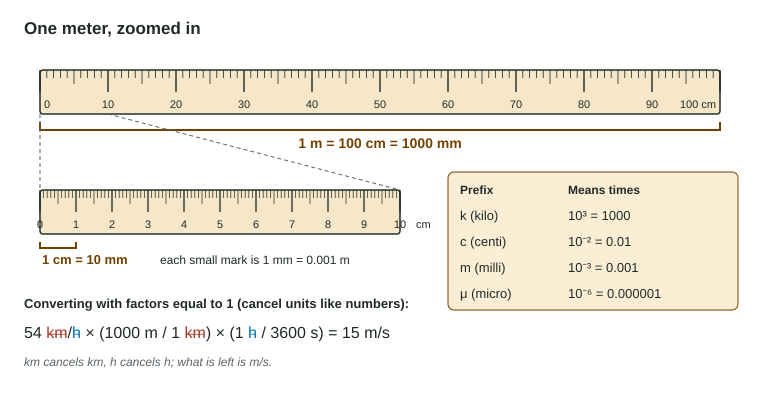

Every quantity in physics has two parts: a number and a unit. "The cart moved 3" means nothing; "the cart moved 3 m" is a measurement. This page covers the units Physics 1 uses, how to convert between them without guessing, how to write very large or very small numbers, and how many digits to report. These are the habits that stop a correct method from losing points to a factor of 100.
SI units: meters, kilograms, seconds
Scientists agreed on one set of units, the International System, or SI units. Physics 1 is built on three base units:
| Quantity | SI base unit | Symbol | Not SI (convert first) |
|---|---|---|---|
| Length | meter | m | cm, mm, km |
| Mass | kilogram | kg | g |
| Time | second | s | ms, min, h |
Other units are built from these. A speed is a length divided by a time, so its unit is meters per second, m/s. The kilogram is the odd one out: it is the base unit even though it carries a prefix. A gram is not SI for mass.
Why it matters: the equations you will use are written for SI units. Put in meters, kilograms and seconds and the answer comes out in SI units too. Put in centimeters or grams and the answer is off by a power of ten, with nothing to warn you.
Metric prefixes are powers of ten

A metric prefix in front of a unit multiplies it by a power of ten. You need four:
| Prefix | Symbol | Multiplies by | Example |
|---|---|---|---|
| kilo | k | 10³ = 1000 | 1 km = 1000 m |
| centi | c | 10⁻² = 0.01 | 1 cm = 0.01 m |
| milli | m | 10⁻³ = 0.001 | 1 ms = 0.001 s |
| micro | μ | 10⁻⁶ | 1 μm = 10⁻⁶ m |
The equations sheet lists more prefixes (tera to pico) if a question uses one.
Converting: multiply by 1
A unit conversion never changes how big a quantity is, only how it is written. The safe method is to multiply by a fraction whose top and bottom are equal, such as (1 m / 100 cm). That fraction equals 1, so the quantity does not change. Put the unit you want on top and the unit you want to get rid of on the bottom, then cancel units exactly as you cancel numbers.
Worked example 1. A pencil is 18 cm long. How long is that in meters?
18 cm × (1 m / 100 cm) = 0.18 m
Check: cm on top cancels cm on the bottom, leaving m. A meter is bigger than a centimeter, so the number got smaller. That makes sense.
Worked example 2. A car drives at 72 km/h. What is its speed in m/s?
72 km/h × (1000 m / 1 km) × (1 h / 3600 s) = 72 000 m / 3600 s = 20 m/s
Check: km cancels km and h cancels h, leaving m/s. Dividing by 3.6 is a shortcut for this exact chain; if you forget which way the shortcut goes, write out the factors.
One trap: an area or a volume needs the factor more than once. A square meter is a square 100 cm on each side, so 1 m² = 100 cm × 100 cm = 10 000 cm². Multiply by (100 cm / 1 m) twice for an area.
Scientific notation
Very small and very large numbers are easier to read in scientific notation: a number from 1 to 10 times a power of ten. A camera shutter open for 0.0040 s is 4.0 × 10⁻³ s; a run lasting 7200 s is 7.2 × 10³ s. On a calculator, type 4.0E-3 (the EE or E key means "times ten to the"). A negative power means a small number, not a negative one.
Significant figures: how many digits to report
A measurement is known only so well. A meterstick read to the millimeter gives 0.452 m, not 0.4523718 m. The significant figures of a value are the digits that were actually measured, including the last, estimated one.
- Nonzero digits count: 8.061 has four.
- Zeros in front only place the decimal point and do not count: 0.0450 has three (4, 5 and the last 0).
- Zeros at the end count when there is a decimal point: 15.0 has three. Without one (7200) they are unclear, so write 7.2 × 10³ for two figures.
When you calculate:
- Multiplying or dividing: keep as many significant figures as the value with the fewest. 200.0 m ÷ 24.81 s = 8.061 m/s (both have four).
- Adding or subtracting: keep the fewest decimal places. 8.7 m + 2.43 m = 11.13 m on the calculator, reported as 11.1 m (8.7 has one decimal place).
- Round once, at the end. Keep extra digits in your calculator between steps; rounding early piles up errors.
The exam does not grade significant figures harshly, and most data come with two or three figures. Reporting a sensible number of digits is still a habit readers notice, and this course grades it on numeric answers so you build it now.
A checklist for every calculation
- Convert every value to m, kg and s before you put it into an equation.
- Carry the units through each step and check that they cancel to the unit you expect.
- Ask whether the size makes sense: a person does not walk at 30 m/s.
- Round once, at the end, to the significant figures the data support.